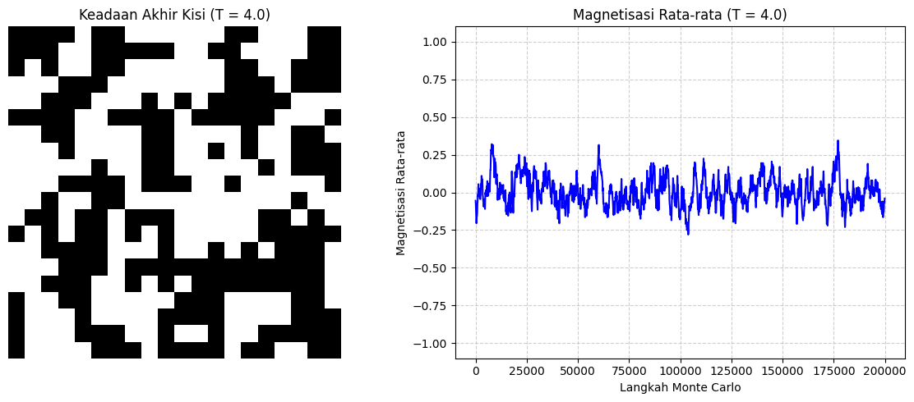

Pada Kasus 3, sistem dikondisikan berada pada temperatur tinggi yaitu T = 4.0. Nilai temperatur ini diposisikan jauh di atas batas ambang kritis teoritis sistem Ising 2 Dimensi (Temperatur Kritis Onsager, Tc sekitar 2.269). Pada rezim temperatur tinggi ini, aspek mekanika statistik menyatakan bahwa kontribusi energi termal acak lingkungan jauh lebih mendominasi jalannya interaksi makroskopis dibandingkan energi kopling ikatan antar-spin (J).
Fluktuasi termal yang sangat masif memutus tatanan jarak jauh (long-range order) dan merusak gaya kohesif yang biasanya menyelaraskan arah spin tetangga. Akibatnya, material uji komputasi akan masuk dan menetap secara permanen dalam Fase Paramagnetik, di mana orientasi dipol magnetik dipaksa teracak secara konstan dan kehilangan sifat magnet permanennya.
Berdasarkan rumusan analitis teoritis batas temperatur tinggi (High-Temperature Limit), besaran parameter makroskopis termodinamika sistem diatur sebagai berikut:
Ketika nilai T = 4.0 dimasukkan, peluang probabilitas Boltzmann untuk menerima keadaan energi yang lebih tinggi mendekati nilai maksimal. Hal ini menyebabkan fluktuasi arah atas (+1) dan arah bawah (-1) terjadi dengan frekuensi yang seimbang, sehingga nilai rata-rata magnetisasi makroskopis runtuh menuju **M = 0**.
Evolusi fisis komputasi ini disimulasikan menggunakan skema stokastik Markov Chain Monte Carlo (MCMC) berlandaskan kriteria penerimaan Metropolis. Kisi disusun atas parameter matriks dua dimensi berukuran 20 x 20 spin dengan Kondisi Batas Periodik (Periodic Boundary Conditions). Sistem dimulai dengan metode Hot Start Initialization dan dibiarkan berevolusi sepanjang 200.000 langkah Monte Carlo untuk mengamati stabilitas fasenya.
import numpy as np
import matplotlib.pyplot as plt
# ==========================================
# 1. PARAMETER SISTEM
# ==========================================
N = 20 # Ukuran kisi 20x20
MCS = 200000 # Total langkah Monte Carlo
T = 4.0 # SUHU SISTEM
# Inisialisasi Hot Start (Spin acak -1 atau 1) untuk entropi maksimum
grid = np.random.choice([-1, 1], size=(N, N))
mag_history = [] # Array untuk menyimpan nilai magnetisasi
# ==========================================
# 2. ALGORITMA METROPOLIS
# ==========================================
for step in range(MCS):
# Pilih koordinat kisi secara acak
i = np.random.randint(0, N)
j = np.random.randint(0, N)
s = grid[i, j]
# Hitung spin tetangga dengan Kondisi Batas Periodik (menggunakan modulo)
tetangga = grid[(i+1)%N, j] + grid[(i-1)%N, j] + grid[i, (j+1)%N] + grid[i, (j-1)%N]
# Hitung selisih energi lokal
delta_E = 2 * s * tetangga
# Kriteria penerimaan Metropolis
if delta_E < 0:
s *= -1 # Terima pembalikan spin
elif np.random.rand() < np.exp(-delta_E / T):
s *= -1 # Terima dengan probabilitas tertentu
grid[i, j] = s # Update kisi
# Catat rata-rata magnetisasi setiap 100 langkah
if step % 100 == 0:
mag_history.append(np.sum(grid) / (N**2))
# ==========================================
# 3. VISUALISASI HASIL
# ==========================================
fig, axes = plt.subplots(1, 2, figsize=(12, 5))
# Plot 1: Keadaan Akhir Kisi (Peta Warna Biner)
axes[0].imshow(grid, cmap='binary', vmin=-1, vmax=1)
axes[0].set_title(f"Keadaan Akhir Kisi (T = {T})")
axes[0].axis('off')
# Plot 2: Riwayat Magnetisasi
axes[1].plot(range(0, MCS, 100), mag_history, color='blue', linewidth=1.5)
axes[1].set_title(f"Magnetisasi Rata-rata (T = {T})")
axes[1].set_xlabel("Langkah Monte Carlo")
axes[1].set_ylabel("Magnetisasi Rata-rata")
axes[1].set_ylim(-1.1, 1.1)
axes[1].grid(True, linestyle='--', alpha=0.6)
plt.tight_layout()
plt.show()

Hasil pengamatan kurva riwayat magnetisasi pada suhu tinggi T = 4.0 memperlihatkan tren yang sangat stabil di sepanjang iterasi. Nilai kurva secara konsisten memคุat tegak lurus berosilasi sangat tipis di sekitar garis horizontal **0.0**. Ketiadaan lonjakan makroskopik menuju kutub fasa fasa +1 atau -1 membuktikan bahwa efek Spontaneous Symmetry Breaking tidak terjadi pada kasus ini, karena energi termal selalu berhasil menghancurkan embrio domain magnetik yang mencoba mengelompok.
Interpretasi ini diperkuat secara visual pada peta warna biner keadaan akhir matriks kisi (`Final State`). Kisi menampilkan visualisasi corak acak yang menyerupai noise televisi (pola papan catur acak "semut berjalan") di mana kerapatan titik hitam (-1) dan titik putih (+1) tersebar merata secara homogen. Ketiadaan struktur klaster fraktal ataupun domain tunggal yang solid mengonfirmasi bahwa pada suhu tinggi T = 4.0, material uji komputasi sepenuhnya berada dalam keadaan **Fase Paramagnetik Murni** yang didominasi oleh kondisi entropi maksimum.